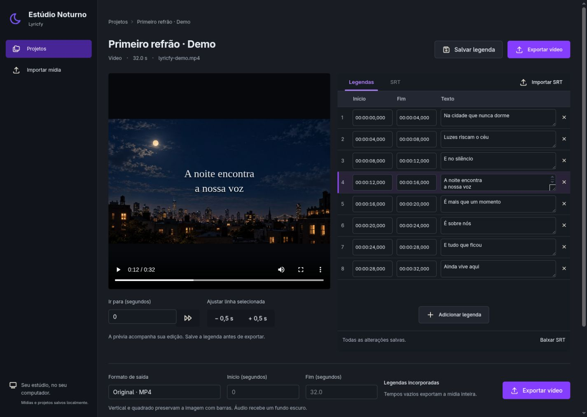

Traga a música.
Escolha um áudio ou vídeo dos seus arquivos, ou importe um vídeo pelo link do YouTube.
Sua mídia original fica preservadaSeu estúdio de lyric videos
Transforme uma faixa, uma letra e uma ideia em um vídeo. Acerte os tempos, encontre o trecho e deixe a música contar a história.
No seu computador. No seu ritmo.
Na cidade que
nunca dorme
Uma ideia de como seus versos ganham espaço. Experimente a prévia.
Um fluxo simples, com espaço para ouvir,
ajustar e fazer do seu jeito.
Escolha um áudio ou vídeo dos seus arquivos, ou importe um vídeo pelo link do YouTube.
Sua mídia original fica preservadaImporte ou cole a letra em SRT. Revise cada verso com a prévia sincronizada e ajuste posição, fonte e tamanho.
Você tem a palavra finalExporte a música inteira ou só aquele trecho. Gere um MP4 com legendas incorporadas, pronto para compartilhar.
Original, vertical ou quadradoPor dentro do Lyricfy
Letra, minutagem e vídeo no mesmo lugar.
Um ambiente escuro para focar no que você está criando.

Projetos e renderizações ficam no seu computador. O fluxo com arquivos locais funciona sem conta ou serviço de IA.
Ajuste a letra e exporte de novo. Cada exportação preserva a versão salva quando você a solicitou.
Escolha início e fim. As legendas acompanham o corte, e os formatos vertical e quadrado preservam a imagem com barras.
O próximo verso
O Lyricfy já procura legendas disponíveis no YouTube. O próximo passo é aproveitar melhor as legendas automáticas e oferecer transcrição do áudio para começar com um rascunho sincronizado.
A transcrição ainda não está disponível. Tradução para português e visuais com IA também fazem parte dos planos.
Acompanhar a evolução no GitHubA próxima criação é sua
O Lyricfy está em fase de MVP e roda localmente.
Baixe o projeto e abra seu próprio estúdio.
Requer Ruby, Bundler e FFmpeg. Para importar do YouTube, yt-dlp.
Encontrou um problema ou tem uma ideia para o editor? Ajude a escrever os próximos passos.
Enviar feedback